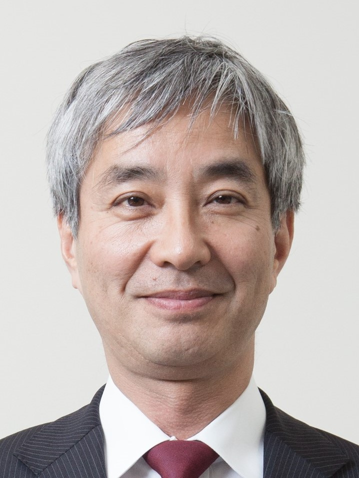
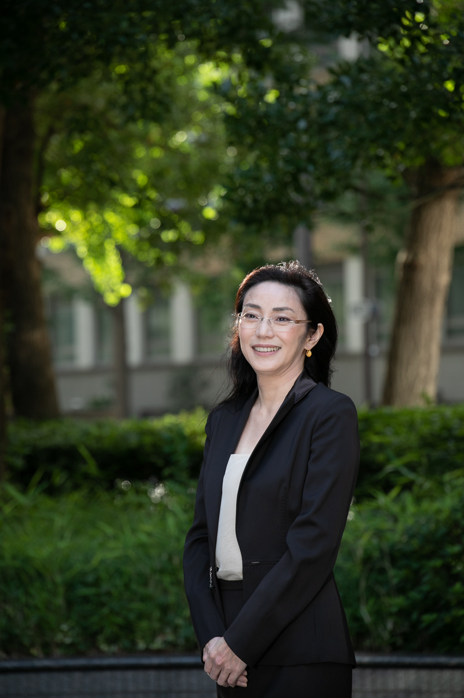
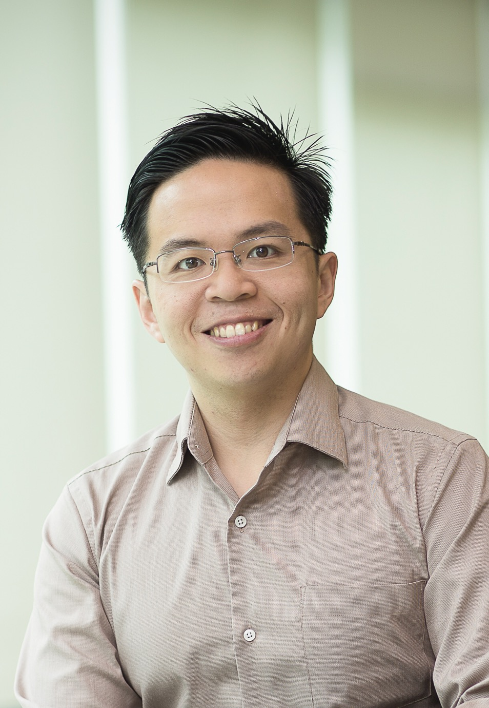
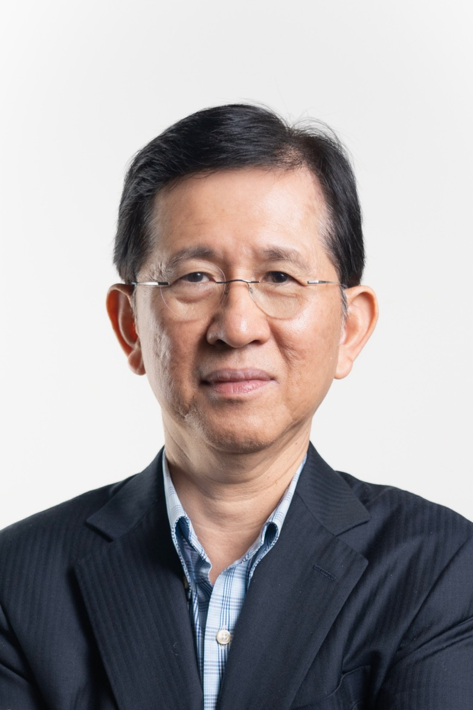

Keynote Speakers

Hiroshi Maruyama
Title: Quality Assurance of AI-Based Systems
Abstract: Recent rapid advancements in AI technologies pose significant challenges for quality assurance (QA) of systems employing these technologies due to the opaque nature of their internal workings. This talk will discuss various challenges to QA for AI-based systems and how they are being addressed. We will argue that these challenges have some parallels in other disciplines such as engineering and social sciences, and that radically multi-disciplinary discussions are needed.
Bio: Hiroshi Maruyama has spent 26 years in IBM Research, Tokyo Research Laboratory, working on various computer science areas such as artificial intelligence, natural language processing, machine translation, hand-writing recognition, multimedia, XML, Web Services, and security. He was the director of IBM Tokyo Research Laboratory from 2006 to 2009. From 2011 to 2016, he was a professor at the Institute of Statistical Mathematics where he worked on projects related to big data, statistics, and their impacts on society. He joined Preferred Networks, Inc. in April 2016 as the chief strategy officer. His current research interests include practical applications of machine learning, social implications of information technology and machine learning, and computer science and statistics in general. Currently he is an Executive Fellow at Kao Corporation, a senior researcher at Research into Artifacts, Center for Engineering, University of Tokyo, and a senior advisor at Preferred Networks, Inc.

Kae Nemoto
Title: Quantum circuit compilation and compression
Abstract: TBD
Bio: Kae Nemoto is a professor at Okinawa Institute of Science and Technology and the Center Director for OIST Center for Quantum Technologies. She is also a professor at the National Institute of Informatics (NII) in Tokyo, where she serves as the director of the Global Research Center for Quantum Information Science and the co-director of the Japanese-French Laboratory for Informatics (JFLI). Her research is focused on applications for quantum computers, quantum machine learning, quantum computer architectures, quantum middleware, quantum networks, quantum internet and complex systems. She also leads an academic education consortium "Quantum Academy for Science and Technology" to provide high quality lectures and education materials for undergraduate and graduate levels in this field. She is a Fellow of both the IoP (UK) and the APS (US).

David Lo
Title: TBD
Abstract: TBD
Bio: David Lo is the OUB Chair Professor of Computer Science and Director of the Center for Research in Intelligent Software Engineering (RISE) at Singapore Management University. Championing the area of AI for Software Engineering (AI4SE) since the mid-2000s, he has demonstrated how AI - encompassing data mining, machine learning, information retrieval, natural language processing, and search-based algorithms - can transform software engineering data into automation and insights. His contributions have led to over 20 awards - including two Test-of-Time awards, one for his ISSRE 2012 work, and ten ACM SIGSOFT / IEEE TCSE Distinguished Paper awards - and gathered more than 30k citations. An ACM Fellow, IEEE Fellow, ASE Fellow, and National Research Foundation Investigator (Senior Fellow), Lo has also served as a PC Co-Chair for ASE'20, FSE'24, and ICSE'25. For more information, please visit: http://www.mysmu.edu/faculty/davidlo/.

Yennun Huang
Title: AI Trustworthiness
Abstract: TBD
Bio: Yennun Huang is the Minister of Digital Affairs of Executive Yuan in Taiwan. He received his PhD in Computer Science from University of Maryland. He Joined AT&T Bell Labs in 1989. His work on Software Implemented Fault Tolerance (SwiFT) tools was applied to tens of telecommunication systems in AT&T and was named one of the ten major technology breakthroughs in Bell Laboratories in 1992. He became a Distinguished Member of Technical Staff of Bell Labs in 1996. He started the Dependable Computing Research Department in AT&T in 1999 and was the department head to ensure the high dependability of all AT&T services. In 2004, Dr. Huang became the Executive Director of Dependable Distributed Computing and Communication Research Department to lead AT&T dependability research programs. In 2007, Dr. Huang became the Executive Vice President of Institute for Information Industry of Taiwan. Dr. Huang was also the Deputy Executive Secretary of Science and Technology Advisory Group of Executive Yuan, helping Taiwan Government on the Information and Communication Technology development policy and funding allocation between 2010 and 2015. He was the Director for Research Center for Information Technology Innovation (CITI), Academia Sinica, Taiwan between 2015 and 2024. Dr. Huang has more than 20 US patents and more than 150 papers published in well-known journals and conferences. His Software rejuvenation paper was awarded Jean-Claude Laprie Award in 2019. Dr. Huang is an IEEE Fellow.